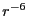
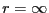
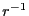

So far, we have considered interparticle interactions that are short-ranged by construction. Because the Lennard-Jones potential decays so strongly with distance (as ), it is acceptable to cut off this interaction at moderate distances and, if desired, add a correction factor which is the result of integrating the potential over a uniform particle density out to . However, Coulomb interactions, common in molecular simulation, decay relatively much more slowly (as ) and as a consequence, we cannot compute a correction factor; the integral diverges. There are several ways to handle long-ranged interactions, but the most popular is the Ewald summation [20], which we discuss here. This discussion is drawn primarily from F&S chapter 12, and chapter 3 of the Ph.D. thesis of Marcus Deserno [21] (Note, this link will download a gzipped PostScript version of Deserno's thesis.)